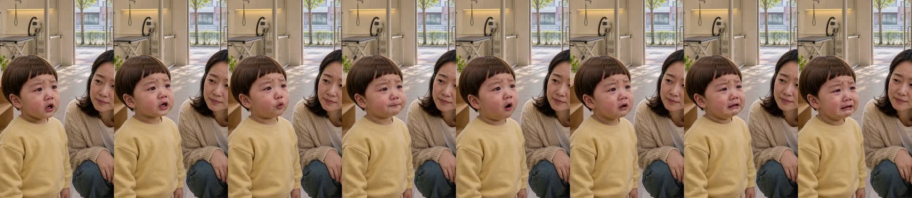
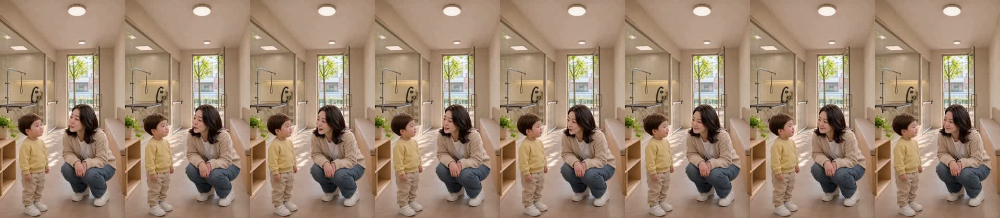
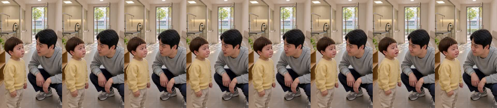
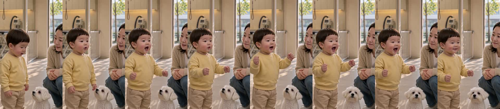
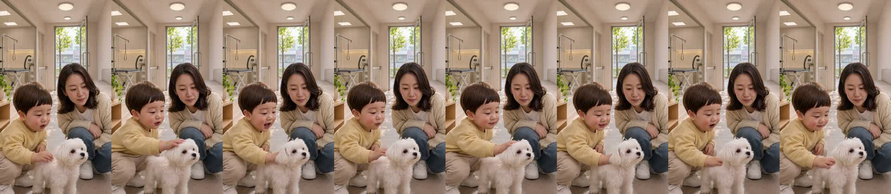

도윤 06 «콩이 기다려» R8 — 완성본 확인
완성본 (16.7초)
컷 5개 조립(D7 통과). 자막 7장, 하단 안전영역 500px. 무대사 컷은 없습니다.
꼭 봐 주셔야 할 것
- 4번 컷 발음 — 대본은 «콩이야, 콩이 왔다!»인데 받아쓰기가 «공이야! 기콩이 왔다!» / 보조 «곰이야! 곰이 왔다!»로 나왔습니다. 아기 말소리에 약한 받아쓰기 탓일 수 있으나 «곰»으로 들리는지 직접 확인이 필요합니다.
- 5번 컷 목소리 높이 — 도윤이 목소리 음높이가 313.7Hz로 기준 330Hz보다 낮게 측정됐습니다. 두 살 목소리로 들리는지 들어 보세요.
- 3번 컷 아빠 목소리 — 측정 음높이가 667Hz로 나왔습니다. 남성 목소리로는 비정상적으로 높아 측정 오류로 의심되나, 실제로 아빠 목소리로 들리는지 확인이 필요합니다.
- 기계가 판정하지 못한 항목(전 컷): 두 살로 보이는가, 소품 모양과 손, 자리와 앞 컷과의 연결, 발음, 편집 연결, 앞 컷 대비 인물 위치, 배경이 세트 정본과 같은가, 시선(렌즈를 보면 결함).
컷별 기계 측정
대본: 콩이 보고 싶어. / 받아쓰기: 콩이 보고 싶어
말 시작 0.62초 · 끝 4.24초(클립 4.46초) · 자르기 0.50→4.36초 · 음높이 348Hz

대본: 콩이는 미용하러 온 거야. 털 다듬고 돌아올 거야. / 받아쓰기: 같음
말 시작 0.30초 · 끝 4.00초(클립 6.58초) · 자르기 0.18→4.12초 · 음높이 184Hz

대본: 조금 있다가 우리 콩이 다시 만날 거야. / 받아쓰기: 같음
말 시작 0.68초 · 끝 2.86초(클립 4.46초) · 자르기 0.56→2.98초 · 음높이 667Hz(측정 오류 의심)

대본: 콩이야, 콩이 왔다! / 받아쓰기: 공이야! 기콩이 왔다! (보조: 곰이야! 곰이 왔다!)
말 시작 0.76초 · 끝 3.56초(클립 4.46초) · 자르기 0.64→3.68초 · 음높이 400Hz

대본: 콩이야, 보고 싶었어. / 받아쓰기: 콩이야! 보고 싶었어!
말 시작 0.58초 · 끝 3.70초(클립 4.46초) · 자르기 0.46→3.82초 · 음높이 313.7Hz(기준 330Hz 미만)

기계 분석으로 확인된 것과 한계
- 5컷 모두 말이 클립 안에서 시작해 끝나며, 말 끊김·무음 사고는 발견되지 않았습니다.
- 대사 글자 일치는 4번 컷만 0.80이고 나머지는 1.00입니다.
- 한계: 받아쓰기·파형·음높이 측정은 눈으로 보고 귀로 듣는 판정이 아닙니다. 자리·배경·시선·소품·발음·두 살 정체성은 아무것도 판정하지 않았습니다.
판정 방법
영상을 보고 들으신 뒤 ✅ 또는 ✏️ 와 함께 한마디 남겨 주세요. ✅ 이면 그 원문을 그대로 청취 영수증에 기록하고 다음 단계로 갑니다. ✏️ 이면 지적하신 내용을 실패 장부에 올리고 해당 컷부터 고칩니다.